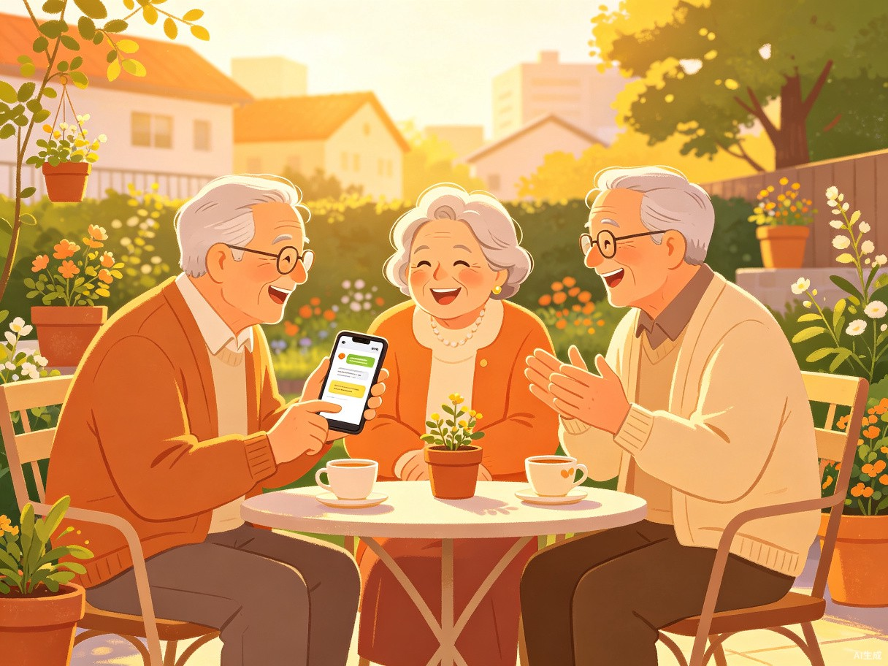
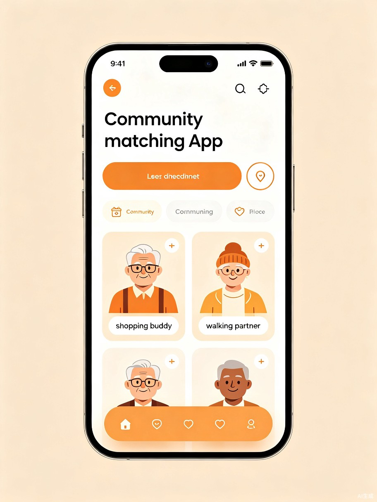

社区互助轻匹配小程序
让独居老人在小区里找到"搭子"，一起买菜、取药、散步——零报酬的轻互助，重连接的邻里情。
打破独居壁垒，用技术重建邻里温度
中国60岁以上老人超2.8亿，其中独居老人占比近50%。日常小事如买菜、取药、代收快递都成难题，而现有平台重服务、重付费，老人之间缺乏低门槛互助渠道。
观察到小区里老人们常在楼下闲聊、互相帮忙，这种自发的邻里互助正是最温暖的养老方式。我们想让这种"搭子文化"突破物理边界，在数字世界延续。
基于微信小程序的轻量级社区互助匹配平台，无需下载App，老人扫码即用。功能聚焦：标签匹配、即时通讯、LBS定位，极简交互降低使用门槛。
与现有养老平台不同，我们完全避开机构服务，专注老人之间的"轻互助、零报酬"社交匹配。低成本、高温度、强信任。
聚焦社区独居老人，解决真实生活难题
60-80岁社区独居或空巢老人，具备基本智能手机使用能力，渴望社交但又不愿给子女添麻烦。他们最需要的不是昂贵护工，而是一个能一起下楼遛弯的伴。

当前困境：没有"邻里搭子"时，老人要么独自承受不便，要么被迫购买高价上门服务。社区里明明有愿意帮忙的邻居，却因为没有连接渠道而彼此错过。
极简设计，让老人轻松上手

1. 智能标签匹配
用户选择"买菜搭子""取药搭子""散步搭子"等标签，系统自动推荐同社区兴趣相投的邻居。
2. LBS社区定位
基于位置锁定同一小区或周边500米范围，确保匹配对象真实可触达，见面只需下楼。
3. 即时语音通讯
大按钮语音对讲，替代打字输入。一键呼叫，像对讲机一样简单。
4. 互助广场
发布/浏览互助需求："明天上午谁一起去社区医院？""求代收快递，下午在家"。
三步找到你的"搭子"
flowchart LR
A[打开小程序] --> B[选择标签
买菜/取药/散步]
B --> C[查看同社区
匹配推荐]
C --> D[发起语音
或文字沟通]
D --> E[约定时间
楼下见面]
E --> F[完成互助
互相评价]
style A fill:#FDF8F3,stroke:#D4653A,stroke-width:2px
style F fill:#D4E5DA,stroke:#5A8A6E,stroke-width:2px
现有方案 vs 邻里搭子
| 维度 | 传统养老机构 | 互联网养老平台 | 邻里搭子 |
|---|---|---|---|
| 服务模式 | 机构托管 | B2C上门服务 | C2C互助匹配 |
| 费用 | 高（月费数千） | 中高（按次收费） | 零报酬 |
| 社交属性 | 弱 | 无 | 核心功能 |
| 技术门槛 | 需硬件/场地 | App下载注册 | 微信小程序即用 |
| 信任基础 | 机构品牌 | 平台审核 | 邻里真实身份 |
商业价值、效率提升与社会价值的统一
缓解独居老人"社交孤岛"困境，重建社区邻里信任网络，以零成本互助减轻社会养老压力。
将"找伴"时间从数天缩短至数分钟。一次匹配即可建立长期互助关系，持续产生价值。
基础功能永久免费，未来通过社区助餐、老年大学等增值服务实现可持续盈利。
从互助匹配到社区生态
上线微信小程序，聚焦1-2个试点社区，验证标签匹配和即时通讯功能，收集早期用户反馈。
增加互助广场、信用评价、语音对讲功能。拓展至5-10个社区，建立种子用户社群。
对接社区助餐点、老年大学活动报名入口，引入便民服务增值功能，探索可持续商业模式。
与街道办、居委会深度合作，成为社区数字化治理工具。开放API接入更多本地生活服务。
「邻里搭子」相信：最好的养老，是老人互相帮助；最好的技术，是让温暖触手可及。
Generated by Trae Work | 创造力大赛参赛作品